A simple raycasting engine written from scratch in Kotlin (transpiled to JS), rendered using only vertical lines drawn on an HTML5 canvas. The source is on GitHub.
The raycasting rendering method was used in early 90's 3D games, most famously Wolfenstein 3D.
Use WASD to move, or the arrow buttons on mobile.
 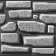
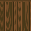
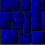
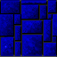
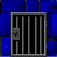
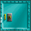
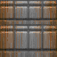
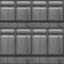
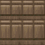
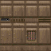
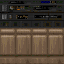
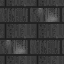
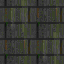
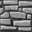
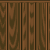
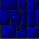
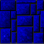
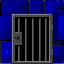
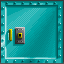
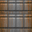
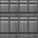
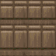
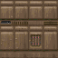
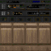
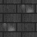
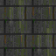
 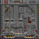
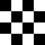
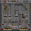
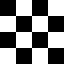